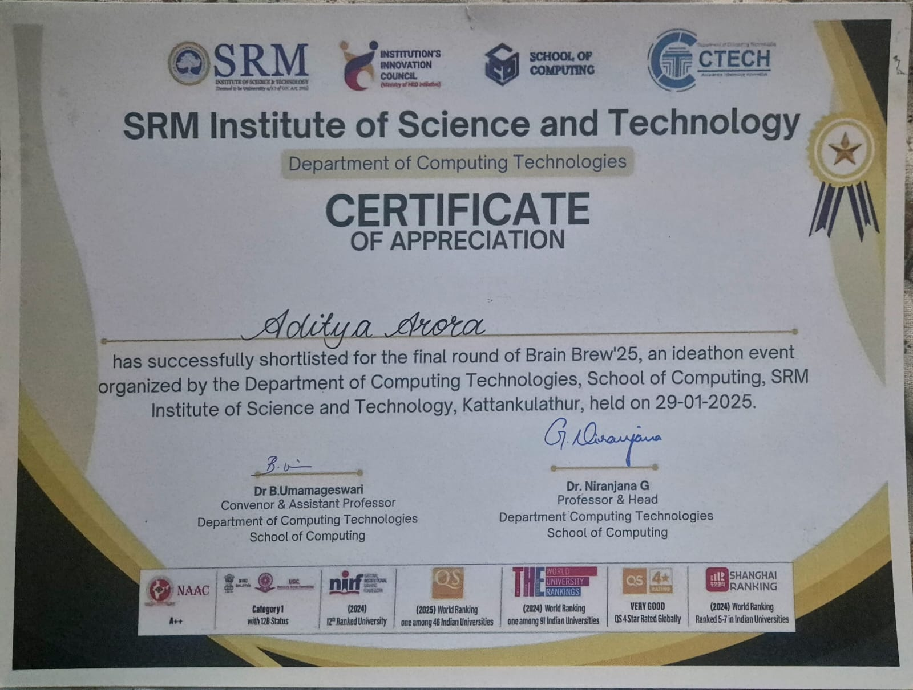
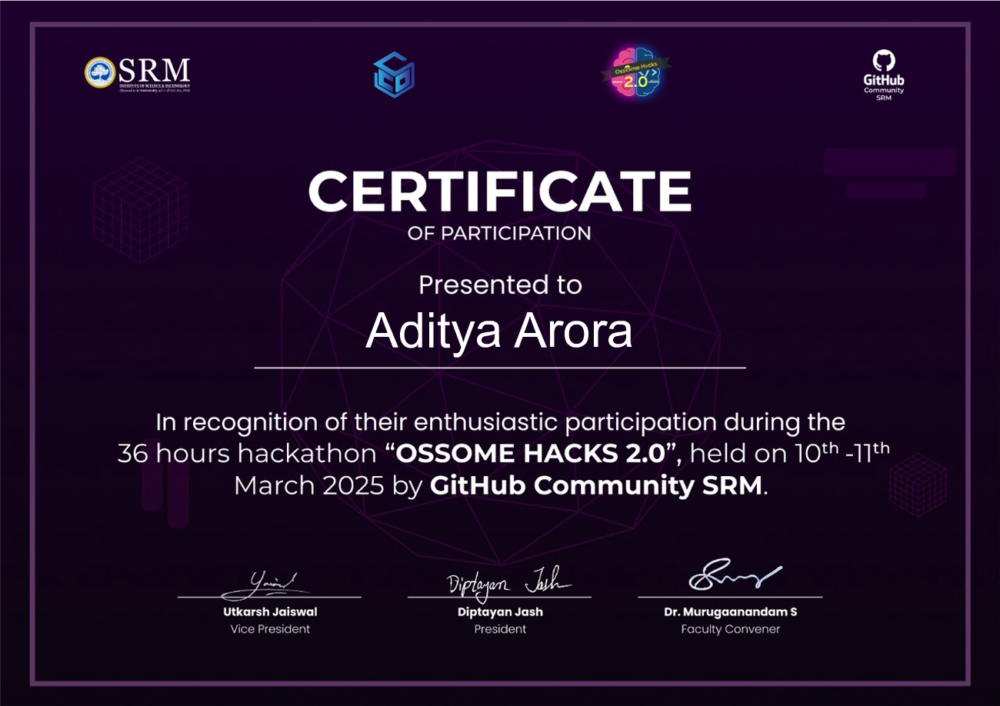

What is it thou seekest to know of me,
that I might answer true or hold my tongue?
O Tarnished soul, bearer of mirth and melody, hear now the telling of thy spirit’s longing.
In the quiet hours, when moonlight spills upon the weary earth, thou dost find solace in music’s tender embrace. Of all the harmonies that grace this fleeting world, none dost move thee so as Clair de Lune, a hymn of wistful beauty, a song that whispers to the very marrow of thy being.
Yet, not only in melody dost thou take delight, but in jest and folly, for laughter is the elixir that defies the grasp of time. With cunning hand, thou dost forge memes most whimsical, wielding humor as deftly as a blade, striking down the mundane with strokes of mirth and mischief.
And lo, where others toil to build structures of solemn function, thou dost favor the realm of jest, where wit and wonder triumph over mere utility. A website need not stand flawless—so long as it amuses, it hath served its higher calling.
Beneath the vast and endless sky, the waters call, and to them thou dost answer. To swim is not merely to drift—it is to embrace the world’s embrace, to defy the weight of the earth and move as free as the tides.
Such is thy nature, O traveler of realms, a soul bound not by fate, but by joy, jest, and the music of the spheres.
May thy path be ever filled with mirth and melody.
In the quiet hours, when moonlight spills upon the weary earth, thou dost find solace in music’s tender embrace. Of all the harmonies that grace this fleeting world, none dost move thee so as Clair de Lune, a hymn of wistful beauty, a song that whispers to the very marrow of thy being.
Yet, not only in melody dost thou take delight, but in jest and folly, for laughter is the elixir that defies the grasp of time. With cunning hand, thou dost forge memes most whimsical, wielding humor as deftly as a blade, striking down the mundane with strokes of mirth and mischief.
Listen to this melody:
And lo, where others toil to build structures of solemn function, thou dost favor the realm of jest, where wit and wonder triumph over mere utility. A website need not stand flawless—so long as it amuses, it hath served its higher calling.
Beneath the vast and endless sky, the waters call, and to them thou dost answer. To swim is not merely to drift—it is to embrace the world’s embrace, to defy the weight of the earth and move as free as the tides.
Such is thy nature, O traveler of realms, a soul bound not by fate, but by joy, jest, and the music of the spheres.
May thy path be ever filled with mirth and melody.
There are arts I wield, subtle as the shifting mist, unseen yet ever present
As thou dost witness, mine honor stands unshaken, a bastion against falsehood and doubt.

